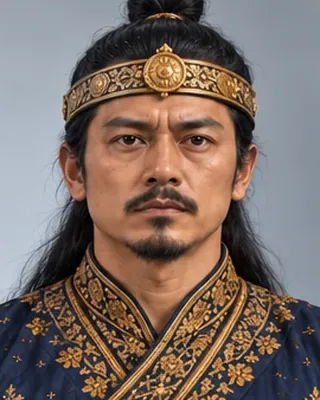

1679–1680
গদাধৰ সিংহ
1681–1696 · Twenty-ninth Ahom king

Founder of the Tungkhungia line. Came out of exile in the Naga hills to take the throne in 1681 and retook Guwahati at Itakhuli in 1682, ending the Ahom–Mughal wars.
Husband of Joymoti Konwari. Built the Dhodar Ali road and began a land survey.
Record confidence: high.
1679–1680

1680

1680

1681–1682

August 1682

c. 1685

c. 1688

c. 1690s